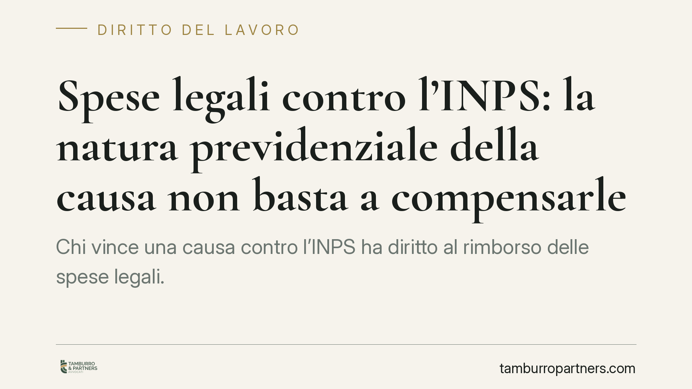
Spese legali contro l'INPS: la natura previdenziale della causa non basta a compensarle
Chi vince una causa contro l'INPS ha diritto al rimborso delle spese legali. La compensazione — cioè lasciare ciascuna parte a carico dei propri costi — non può essere disposta sol…
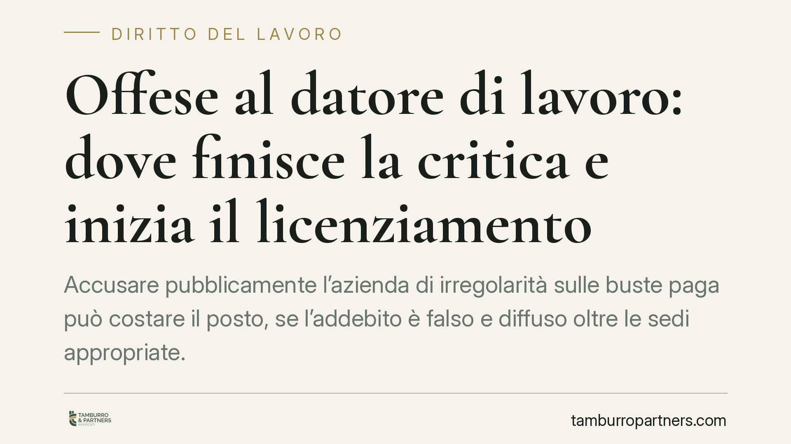
Offese al datore di lavoro: dove finisce la critica e inizia il licenziamento
Accusare pubblicamente l'azienda di irregolarità sulle buste paga può costare il posto, se l'addebito è falso e diffuso oltre le sedi appropriate. Il diritto di critica del lavorat…
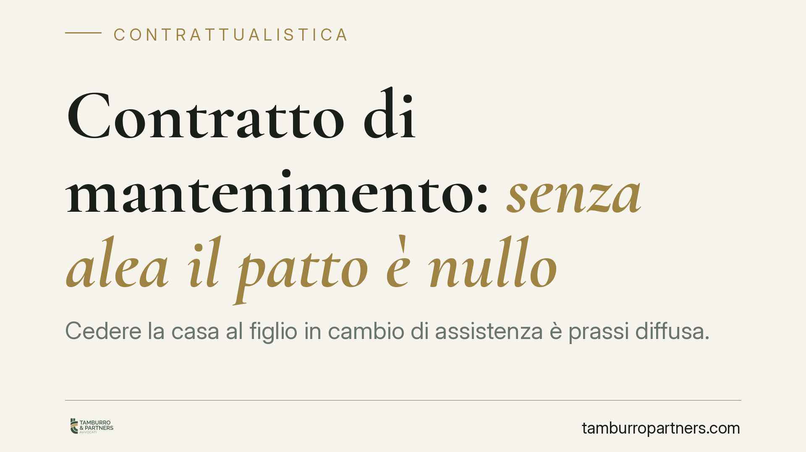
Contratto di mantenimento: senza alea il patto è nullo
Cedere la casa al figlio in cambio di assistenza è prassi diffusa. Ma se, al momento del rogito, il disponente è già gravemente malato e le cure valgono molto meno dei beni trasfer…
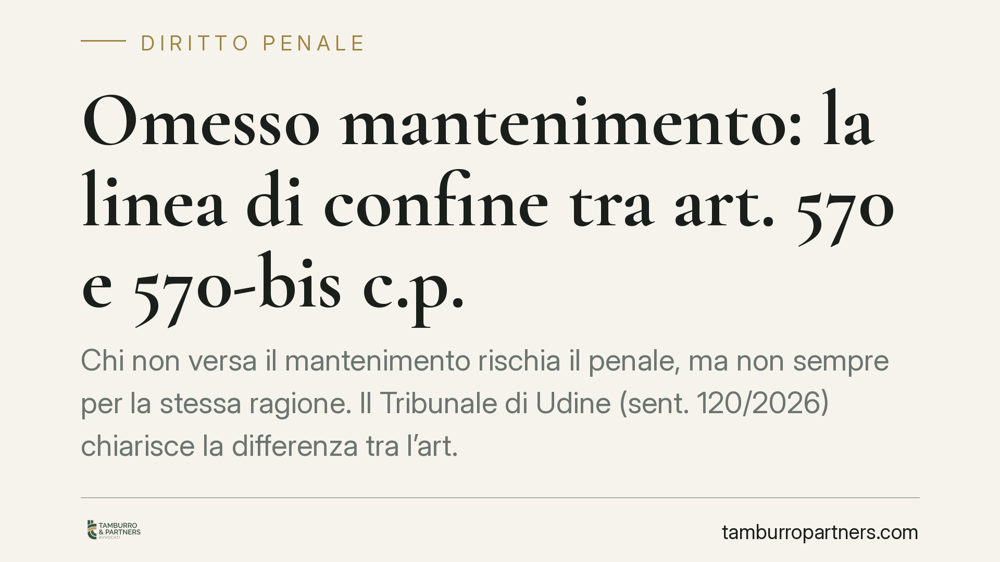
Omesso mantenimento: la linea di confine tra art. 570 e 570-bis c.p.
Chi non versa il mantenimento rischia il penale, ma non sempre per la stessa ragione. Il Tribunale di Udine (sent. 120/2026) chiarisce la differenza tra l'art. 570 c.p., che impone…
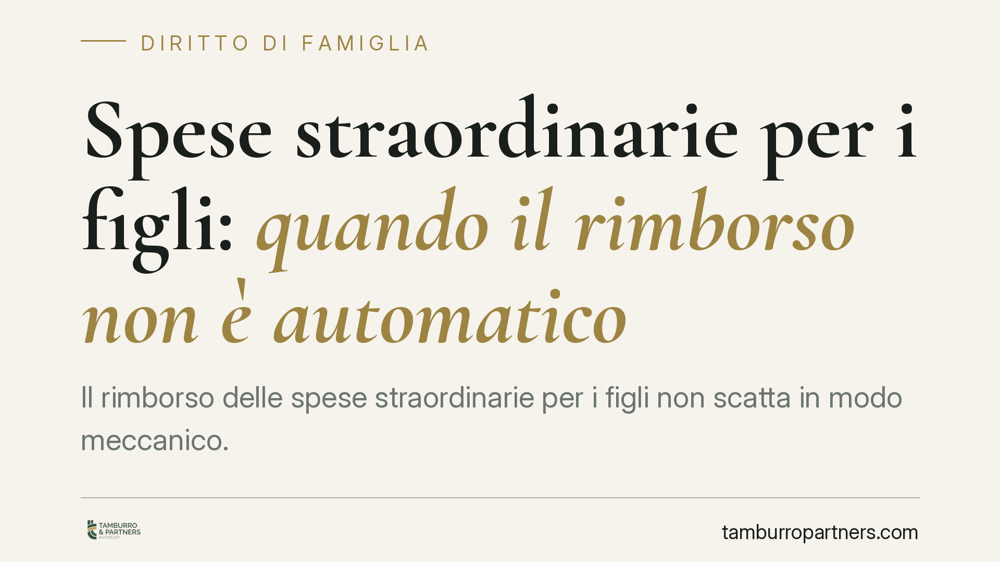
Spese straordinarie per i figli: quando il rimborso non è automatico
Il rimborso delle spese straordinarie per i figli non scatta in modo meccanico. Il giudice deve qualificare la singola spesa e indicare i criteri di ripartizione con una motivazion…
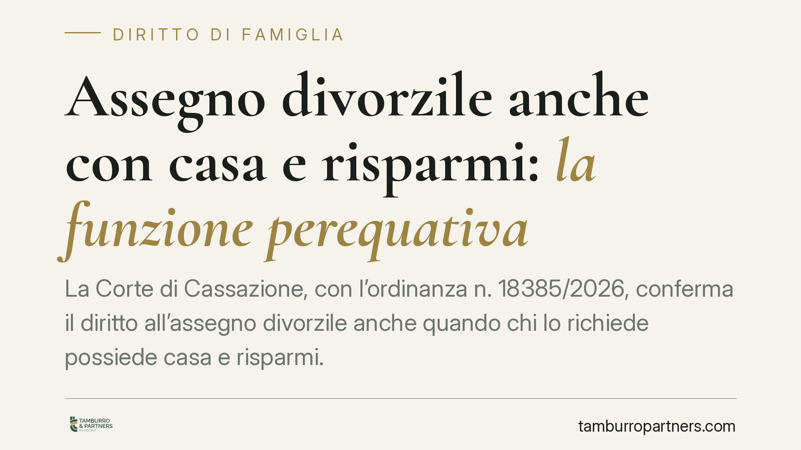
Assegno divorzile anche con casa e risparmi: la funzione perequativa
La Corte di Cassazione, con l'ordinanza n. 18385/2026, conferma il diritto all'assegno divorzile anche quando chi lo richiede possiede casa e risparmi. A pesare non è solo lo stato…
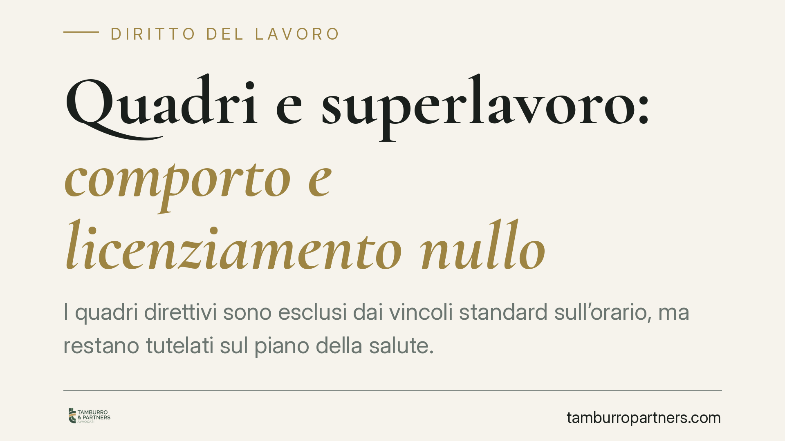
Quadri e superlavoro: comporto e licenziamento nullo
I quadri direttivi sono esclusi dai vincoli standard sull'orario, ma restano tutelati sul piano della salute. Secondo un orientamento della Cassazione, se la malattia che porta al …
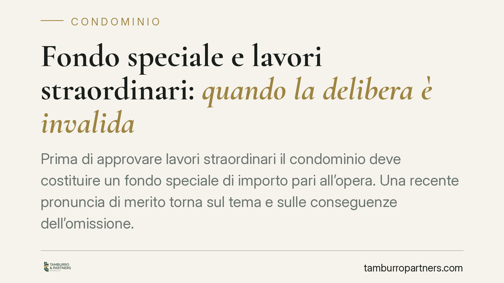
Fondo speciale e lavori straordinari: quando la delibera è invalida
Prima di approvare lavori straordinari il condominio deve costituire un fondo speciale di importo pari all'opera. Una recente pronuncia di merito torna sul tema e sulle conseguenze…
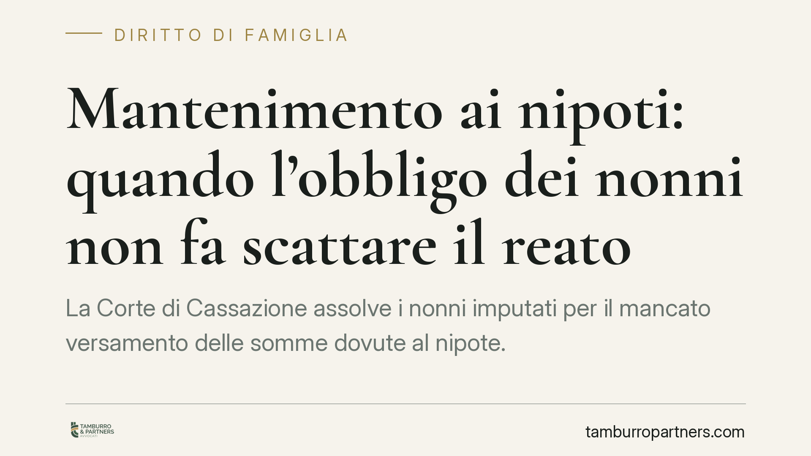
Mantenimento ai nipoti: quando l'obbligo dei nonni non fa scattare il reato
La Corte di Cassazione assolve i nonni imputati per il mancato versamento delle somme dovute al nipote. L'obbligo grava in via primaria sui genitori; quello degli ascendenti è solt…
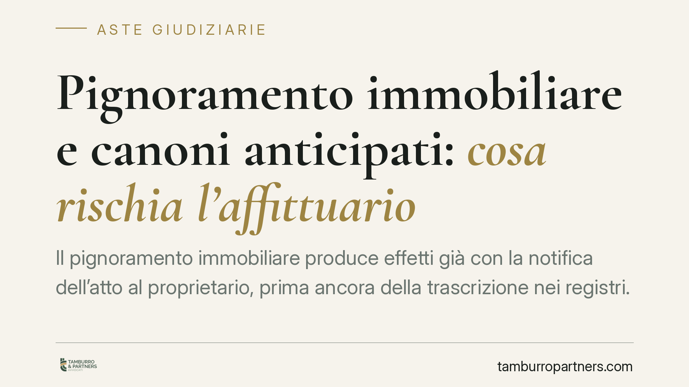
Pignoramento immobiliare e canoni anticipati: cosa rischia l'affittuario
Il pignoramento immobiliare produce effetti già con la notifica dell'atto al proprietario, prima ancora della trascrizione nei registri. Un principio che incide direttamente sui co…
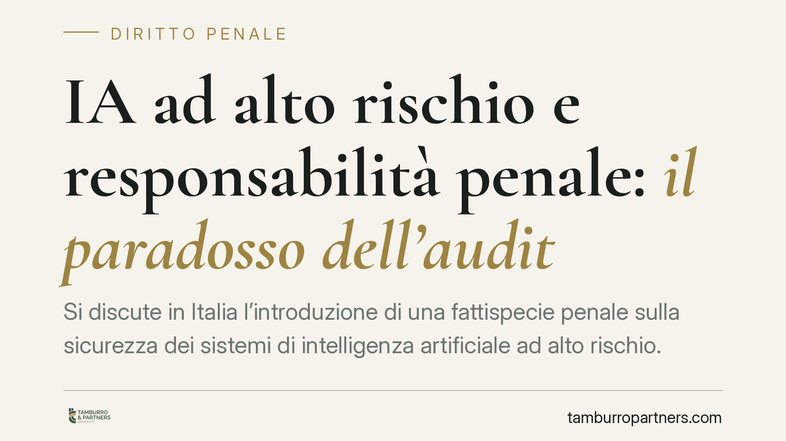
IA ad alto rischio e responsabilità penale: il paradosso dell'audit
Si discute in Italia l'introduzione di una fattispecie penale sulla sicurezza dei sistemi di intelligenza artificiale ad alto rischio. Le fonti divulgative anticipano pene severe e…
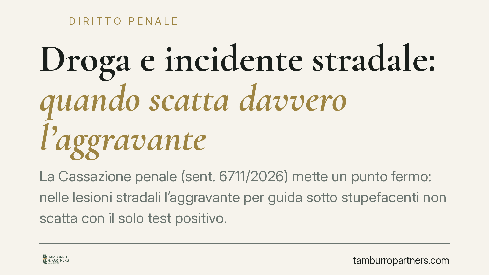
Droga e incidente stradale: quando scatta davvero l'aggravante
La Cassazione penale (sent. 6711/2026) mette un punto fermo: nelle lesioni stradali l'aggravante per guida sotto stupefacenti non scatta con il solo test positivo. Servono indici s…
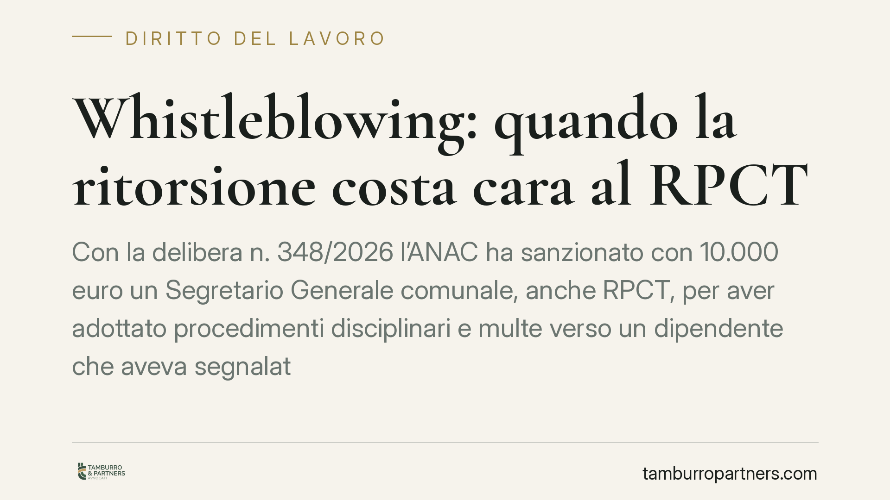
Whistleblowing: quando la ritorsione costa cara al RPCT
Con la delibera n. 348/2026 l'ANAC ha sanzionato con 10.000 euro un Segretario Generale comunale, anche RPCT, per aver adottato procedimenti disciplinari e multe verso un dipendent…
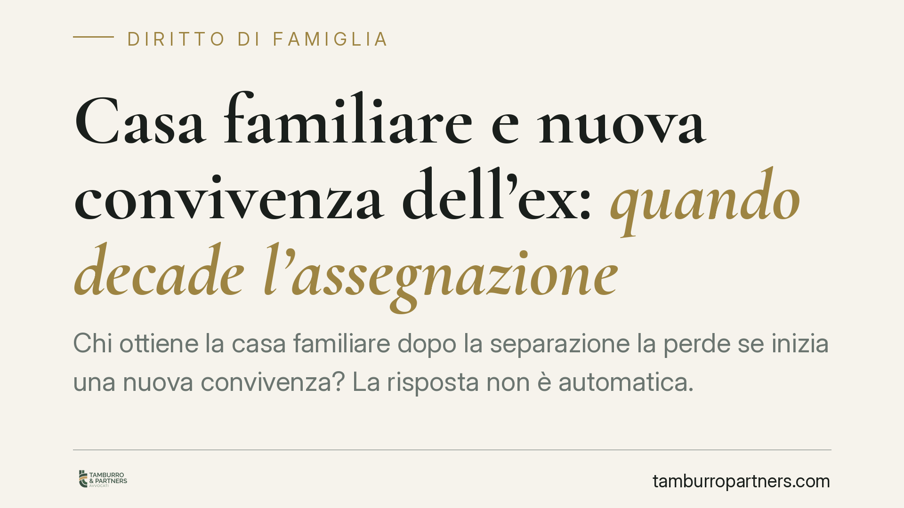
Casa familiare e nuova convivenza dell'ex: quando decade l'assegnazione
Chi ottiene la casa familiare dopo la separazione la perde se inizia una nuova convivenza? La risposta non è automatica. Ciò che conta è dove si trova realmente il centro di vita d…
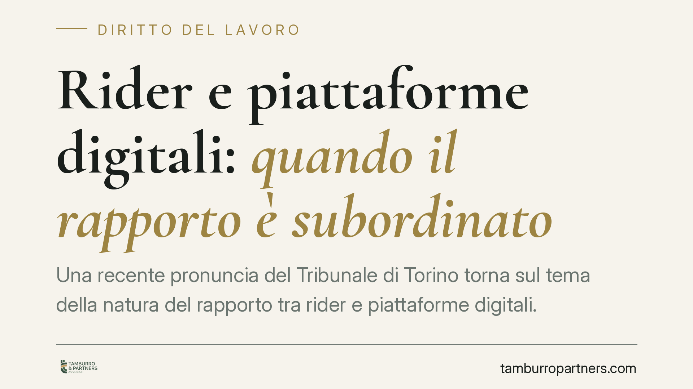
Rider e piattaforme digitali: quando il rapporto è subordinato
Una recente pronuncia del Tribunale di Torino torna sul tema della natura del rapporto tra rider e piattaforme digitali. La questione non è teorica: dalla qualificazione dipendono …
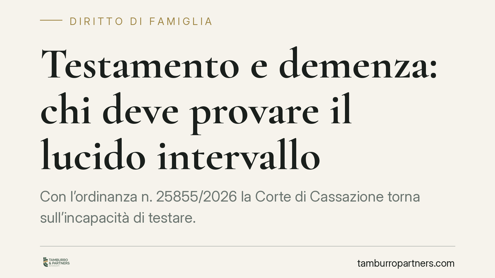
Testamento e demenza: chi deve provare il lucido intervallo
Con l'ordinanza n. 25855/2026 la Corte di Cassazione torna sull'incapacità di testare. Se è provata una condizione di infermità mentale stabile e permanente in un periodo prossimo …

Videosorveglianza in condominio: quando scatta il risarcimento per violazione della privacy
Il Tribunale di Napoli Nord, con pronuncia del 2026, ha dichiarato illegittimo un impianto di videosorveglianza che riprendeva le parti comuni di un condominio minimo installato se…

Mobbing del superiore: quando l'azienda non risponde
Non sempre l'azienda risponde del mobbing commesso da un superiore. Quando le vessazioni perseguono un interesse privato del dirigente e il datore ha vigilato adottando misure di t…

Licenziamento via WhatsApp: valido il testo, nulla la nota vocale
Un messaggio WhatsApp può licenziare? La giurisprudenza di merito distingue: il testo scritto, se se ne prova la ricezione, può rispettare la forma prescritta; la nota vocale no, p…

Assenza dal lavoro e dimissioni per fatti concludenti: quanti giorni servono?
Un'assenza ingiustificata prolungata può oggi valere come dimissioni. Lo prevede l'art. 19 della Legge 203/2024, che ha introdotto le cosiddette dimissioni per fatti concludenti. M…

Ferie non godute: chi deve provare l'invito alla fruizione?
Chi non fruisce delle ferie ha diritto all'indennità sostitutiva, a meno che il datore dimostri di aver invitato formalmente il lavoratore a goderne. Una recente pronuncia della Co…

Riconoscimento facciale nelle indagini: dove finiscono le garanzie
Si discute di introdurre nel processo penale l'identificazione biometrica remota in tempo reale, cioè il riconoscimento facciale a distanza durante le indagini. Il nodo è chi autor…

Comporto e sovraccarico di lavoro: quando il licenziamento del dirigente è illegittimo
La malattia causata da un carico di lavoro eccessivo, imposto in violazione dell'obbligo di sicurezza, non può fondare il licenziamento per superamento del comporto. Il principio r…

Abitare la casa familiare dopo la morte del coniuge non equivale ad accettare l'eredità
Continuare ad abitare la casa familiare dopo la morte del coniuge non significa accettare l'eredità. Lo ribadisce la Cassazione con la sentenza n. 1551/2026, estendendo la tutela a…

Padre residente all'estero: le spese di viaggio incidono sul mantenimento?
La giurisprudenza di legittimità affronta ricorrentemente il tema del genitore che vive all'estero e sostiene costi rilevanti per incontrare il figlio. La domanda pratica è netta: …

Isopensione e scivoli aperti anche ai contributivi puri
L'INPS chiarisce l'accesso a isopensione e assegno straordinario dei fondi di solidarietà per i lavoratori con primo contributo dal 1996 (i cosiddetti contributivi puri). Il nodo e…

Fotovoltaico sul tetto condominiale: fin dove arriva il diritto del singolo
Un condomino vuole installare pannelli fotovoltaici sul tetto comune. Può farlo, ma non a costo di saturarne l'intera superficie a discapito degli altri. Una recente pronuncia di m…

Chat e reati tributari: corrispondenza o documento?
Le chat sequestrate nelle indagini per reati tributari pongono un problema aperto: sono corrispondenza protetta dall'art. 15 della Costituzione o semplice prova documentale? La dis…

Indagini a favore dell'indagato: il PM ha un dovere di completezza, non un obbligo penale
Un recente orientamento della Cassazione penale torna sul contenuto dell'art. 358 c.p.p., che impone al pubblico ministero di svolgere accertamenti anche a favore dell'indagato. La…

Canna fumaria abusiva su muro comune: quando può esserne ordinata la rimozione
La canna fumaria di un locale installata sul muro condominiale che diffonde fumi e odori oltre la normale tollerabilità può essere oggetto di ordine di rimozione. Un orientamento c…